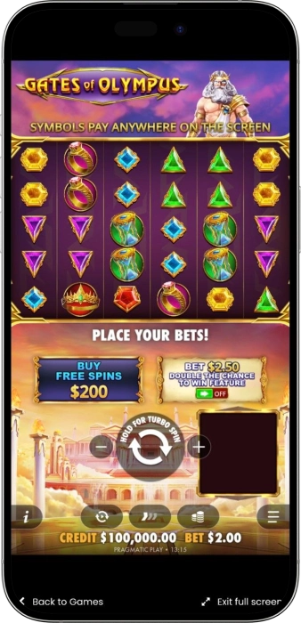
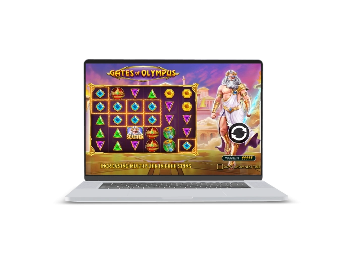

Exclusive welcome offer of
Exclusive welcome bonus of
Gates of Olympus Slot with Free Spins, Multipliers and Powerful Bonus Play
Top Casinos
Bonus Details
Casino
Bonuses
Rate
Free Spins
More Info
Get
Advantages
-
Powerful Zeus theme with cinematic visuals
-
Multipliers up to x500 boost wins
-
Cascading wins extend every successful spin
-
Free spins with accumulating strong multipliers
-
Pays symbols anywhere on the grid
-
Simple controls and fast game rhythm
-
High potential for exciting bigger payouts
- Some text after list
Gates of Olympus App



Gates of Olympus— slot review and features
Gates of Olympus is a fast-paced Ancient Greece themed slot built around Zeus, tumbling wins, random multipliers, and bonus free spins.
The game uses a pay-anywhere style, so matching symbols can create wins across the grid without relying on traditional paylines. Its main attraction is the multiplier system, which can turn regular hits into much stronger payouts and becomes especially exciting during the bonus feature. The base game feels active because winning symbols disappear and new ones drop into place for extra chances within the same spin. Free spins are triggered by scatter symbols and give the slot its most explosive moments. Gates of Olympus is a strong choice for players who enjoy energetic gameplay, high volatility, and the possibility of big momentum swings.

Gates of Olympus
Gates of Olympus Key Features and Core Mechanics
Gates of Olympus is a high-energy slot that replaces classic paylines with a pay-anywhere system across a 6x5 grid. The gameplay feels lively thanks to tumbling wins, random multipliers, and a free spins feature that can completely change the pace of a session. It is easy to understand at first glance, yet it offers enough volatility and bonus depth to stay exciting for experienced slot players. The game is especially appealing to users who enjoy fast rounds, mythological visuals, and strong win potential during feature play.
Gates of Olympus Main Characteristics
- • Provider: Pragmatic Play
- • Theme: Ancient Greece, Zeus, Olympus
- • Grid size: 6x5
- • Payout system: 8+ matching symbols anywhere on the grid
- • Core mechanic: tumble / cascading wins
- • Free spins: 15 awarded by 4 or more scatters
- • Multipliers: random values up to x500
- • RTP: 96.50%
- • Volatility: high
- • Overall feel: explosive bonus-driven gameplay
Where to Play Gates of Olympus
Gates of Olympus is usually available on major online gaming platforms that feature popular slot providers. In most cases, the game can be opened both on desktop browsers and on mobile devices, which makes access simple and flexible. Many platforms offer both demo play and real-money mode, allowing users to learn the mechanics before switching to full play. The slot is commonly found through the main slot lobby, featured game sections, or a direct search by name. A smooth platform, clear navigation, and stable performance make the overall experience much more enjoyable.
Gates of Olympus Demo Mode
The demo mode in Gates of Olympus lets players explore the slot without risking real money. It usually mirrors the same symbols, multipliers, tumbling mechanics, and free spins found in the standard version, but uses virtual credits instead of cash. This makes it a practical way to understand the pace of the game and the impact of its high volatility before placing actual bets. Demo play is especially useful for learning the rules, testing bet comfort, and getting familiar with the bonus feature in a relaxed format.
Gates of Olympus Symbol Payout Table
The Gates of Olympus paytable is built around premium themed symbols and lower-paying gems that can still create useful cascades across the grid. Premium icons deliver the strongest single-symbol payouts, while gem symbols help sustain the rhythm of the base game. This table gives a clear picture of how the symbol values are generally ranked inside the slot.
| Symbol | Top Payout | Notes |
|---|---|---|
| Crown | Up to x50 | Top premium symbol in the game |
| Hourglass | Up to x25 | Strong premium payout potential |
| Ring | Up to x15 | Common premium symbol for solid wins |
| Cup | Up to x12 | Reliable premium symbol |
| Red Gem | Up to x10 | Highest-paying gem symbol |
| Purple Gem | Up to x8 | Mid-tier gem value |
| Yellow Gem | Up to x5 | Regular base-game symbol |
| Green Gem | Up to x4 | Lower-paying symbol |
| Blue Gem | Up to x2 | Most basic symbol on the grid |
| Scatter | Feature trigger | 4+ scatters award 15 free spins |
How Players Win in Gates of Olympus in Real Practice
Players do not beat Gates of Olympus through a hidden trick or a guaranteed pattern. In real play, the most noticeable wins usually come from well-timed bonus rounds where several multipliers stack onto the same successful tumble. The base game mainly works as the path toward that explosive moment, helping players reach scatters, cascades, and momentum-building spins. A common mistake is raising the stake too aggressively in an attempt to force the feature, even though the game is built around high volatility and patience. In practice, steadier bet sizing, a clearly defined bankroll, and enough breathing room for the session tend to produce a much more controlled experience. When free spins finally land, the real power comes from accumulated multipliers, because that is where ordinary-looking wins can become much more dramatic.
Software Providers
Gates of Olympus — bonuses, features, and how to play
Gates of Olympus Bonuses and Special Offers
Gates of Olympus is built around bonus-driven gameplay, which is why the slot feels exciting even during the base game. Its strongest moments usually come from free spins, random multipliers, and tumble chains working together inside the same sequence. On some platforms and in certain jurisdictions, extra options may also be available to increase scatter access or jump directly into the feature. From a player perspective, the most valuable bonus is not just the free spins round itself, but the chance to combine multiple multipliers during that feature. Platform promotions can also add extra value through welcome packages, free spins on selected slots, cashback, or reload deals. The key is understanding which bonuses belong to the slot mechanics and which ones come from the platform.
Gates of Olympus Free Spins
- • 15 free spins are awarded when 4 or more scatter symbols land. This is the main in-game bonus and the most exciting phase for players chasing bigger swings.
Random Multipliers
- • Multiplier values can range from x2 to x500. When several multipliers connect with a winning result, they are added together and can dramatically improve the final payout.
Tumble Wins
- • Winning symbols disappear and new symbols fall into place, which can create extended chains from a single spin. This feature is one of the reasons the slot feels so lively.
Ante Bet Option
- • In some versions, Ante Bet adds roughly 25% to the stake while increasing the chance of landing scatters. It can speed up the bonus feel of the game, but it also raises session cost.
Bonus Buy Feature
- • In selected regions, players may see a bonus buy option priced at around x100 of the current bet. This gives instant access to free spins, but it is not available everywhere.
Welcome Offers
- • Some platforms pair Gates of Olympus with examples such as a 100% first deposit bonus or 50 to 200 free spins on selected slot titles. These are external promotions rather than built-in slot features.
Cashback and Reload Deals
- • General examples include 5% to 15% cashback or reload bonuses on later deposits. These offers can soften the impact of high volatility and support longer sessions.
Gates of Olympus Free Spins and Multipliers
The free spins feature and multiplier system are the true core of Gates of Olympus. They create the dramatic shift from a calm base game into a much more explosive bonus sequence, which is exactly what makes the slot so memorable. The table below gives a clear view of how the main feature mechanics work together.
| Feature | Trigger | Effect |
|---|---|---|
| Free Spins | 4+ scatters | Awards 15 free spins |
| Base Game Multipliers | Randomly during winning tumbles | Boosts payouts up to x500 |
| Free Spins Multipliers | Appear on winning feature results | Add together and increase the final win |
| Multiple Multipliers | Several land on one result | Values are summed together |
| Retrigger Potential | Extra scatters during feature play | Extends the bonus session |
| Tumble Mechanic | Any winning combination | Creates extra chances in the same spin |
How to Play Gates of Olympus
Playing Gates of Olympus is simple, but understanding the win structure makes the experience much smoother. The goal is to choose a comfortable stake, spin consistently, and watch how tumbles, multipliers, and scatters interact across the grid. Once you understand the bonus rhythm of the slot, it becomes easier to manage both the pace of play and your bankroll.
Step 1: Launch the Game
- • Open Gates of Olympus and choose either demo mode for practice or the standard version for full gameplay.
Step 2: Set Your Bet
- • Pick a stake that fits your balance. Because the slot is high volatility, a comfortable bet size helps support a longer session.
Step 3: Start the Spin
- • Press the spin button and watch for 8 or more matching symbols anywhere on the 6x5 grid.
Step 4: Follow the Tumbles
- • When a win lands, the symbols disappear and new ones drop in. This can create additional results within the same spin.
Step 5: Watch the Multipliers
- • Random multipliers can strengthen a win dramatically, especially when they connect during a successful tumble chain.
Step 6: Trigger Free Spins
- • Landing 4 or more scatters awards 15 free spins, which is the most exciting feature in the game.
Step 7: Stay in Control
- • Set session limits for time, spending, and emotional comfort before you start spinning.
Gates of Olympus Playing Tips
Gates of Olympus works best for players who respect its high volatility and do not try to force instant results. The slot often rewards patience more than emotional bet changes, which is why preparation matters before the session even begins. A steady approach usually makes the experience feel smoother, more controlled, and easier to enjoy.
Start with Demo Play
- • Test the slot with virtual credits first so you can understand the pace of tumbles, scatters, and multipliers.
Use a Moderate Stake
- • Avoid starting too high. A comfortable bet size gives you more room to handle the natural swings of the game.
Respect High Volatility
- • Gates of Olympus can stay quiet for a while and then suddenly become explosive. Patience is part of the experience.
Do Not Chase the Feature
- • Raising the stake just to force free spins usually adds unnecessary pressure and can damage bankroll control.
Think in Sessions
- • Focus on how long you want to play rather than expecting every short run to deliver a bonus instantly.
Use Autoplay Carefully
- • Autoplay is convenient, but it should never replace attention. Pause regularly and review your balance and bet size.
Set a Clear Session Goal
- • Decide whether you are testing the slot, playing casually, or committing to a longer session. That keeps decisions consistent.
Gates of Olympus Mistakes That Drain the Bankroll
Most bankroll losses in Gates of Olympus come from poor session decisions rather than from the slot alone. High volatility can push players into emotional choices, especially after dry stretches or exciting bonus moments. The better you understand the common mistakes, the easier it becomes to stay in control and avoid turning the session into a rushed chase.
Starting Too High
- • A large opening stake cuts down session length and reduces your chance to comfortably reach the feature phase of the game.
Chasing Losses
- • Raising bets after a losing run usually increases pressure and speeds up bankroll damage instead of solving it.
Playing Without Limits
- • No time or spending cap means decisions become emotional, and emotional sessions often become expensive sessions.
Ignoring Volatility
- • Expecting constant action from a high-volatility slot creates frustration and leads to poor in-session choices.
Skipping Demo Mode
- • New players who skip practice often misunderstand how pay-anywhere wins, tumbles, and multipliers actually behave.
Betting Emotionally After a Win
- • Increasing the stake right after a strong hit because the game feels “hot” is a very common and costly mistake.
Playing Too Long Without Breaks
- • Fatigue reduces focus and makes impulse decisions more likely, which is dangerous in a fast-moving slot session.
Frequently Asked Questions
No. The slot uses a pay-anywhere format where 8 or more matching symbols can create a win across the grid, which makes the gameplay feel more fluid and modern.
No. Gates of Olympus does not rely on a progressive jackpot system. Its main excitement comes from free spins, multipliers, and tumble chains.
In many versions, yes. Autoplay can be useful for rhythm-based sessions, but it should always be used with full attention to spending limits.
Yes. One of the reasons the game feels so tense is that players often see several scatters land without fully triggering the feature, which adds anticipation.
Its biggest differences are the pay-anywhere system, cascading wins after successful combinations, and the strong role of random multipliers.